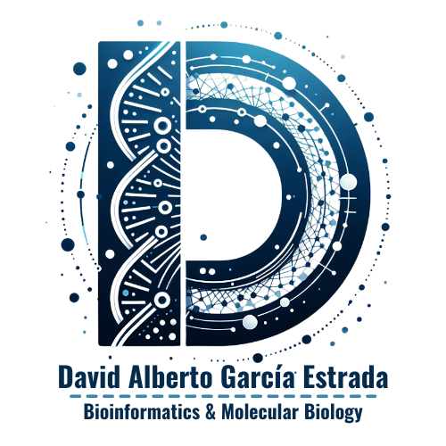
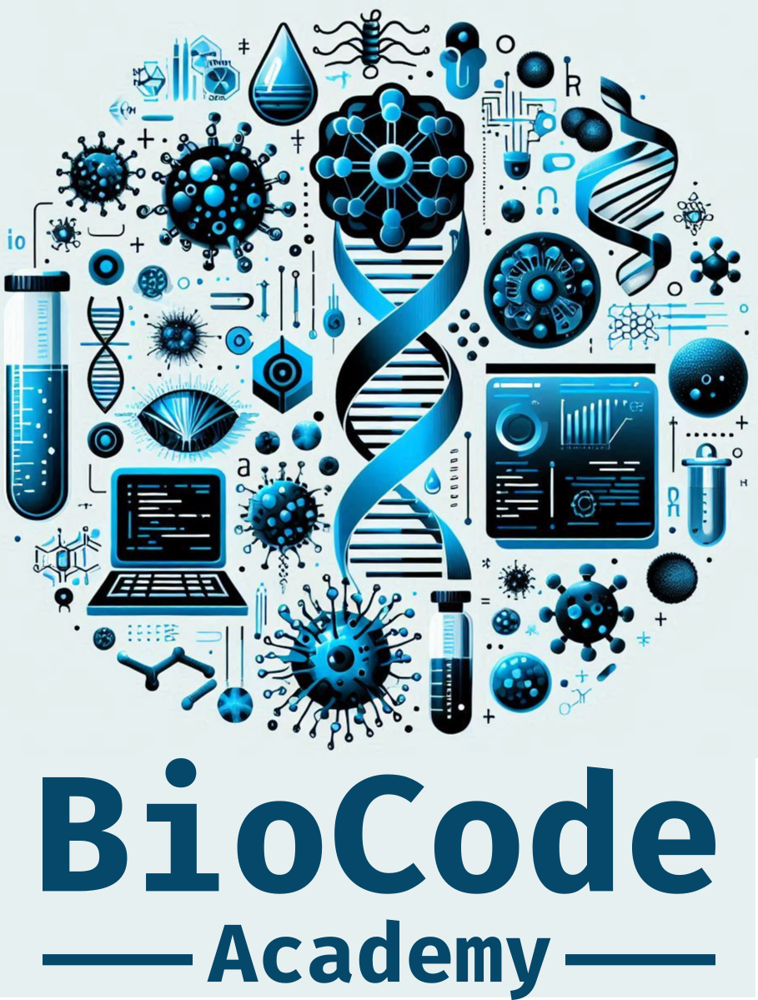

Introducción a Unix para Bioinformática

BioCode Academy

Información general
¡Bienvenido al punto de partida de tu viaje bioinformático! 🌟 Este curso te introduce al poderoso mundo de Unix, la columna vertebral de casi todas las herramientas bioinformáticas modernas.
🔍 ¿Qué aprenderás?
- 📁 Navegación eficiente por el sistema de archivos
- ⌨️ Dominio de comandos esenciales para el análisis de datos
- 📝 Creación de scripts para automatizar tareas repetitivas
- 🧩 Manipulación de archivos de secuencias biológicas
- 🔄 Pipelines básicos de procesamiento de datos
- ⌛ Duración: 8 horas (2 horas diarias)
- 💬 Idioma: Español
- 📍 Ubicación: Virtual (Teams)
- 📝 Modalidad: Práctico (20%) + Teórico (80%)
- Requerimientos:
- 💻 Laptop
- 🌐 Conexión a internet
- 🐧 Ambiente Unix/WSL (no obligatorio)
NO SE REQUIERE CONOCIMIENTO PREVIO EN PROGRAMACIÓN
📅 Día 1
Módulo 1: Introducción & Configuración
Objetivo: Al finalizar, tendrás un ambiente Unix para posteriores análisis.
Actividades:
🔥 Bienvenida & dinámicas
- Presentación del curso
- Código de conducta
- Ronda exprés de presentaciones
💻 Instalación de software
- 🐧 WSL (Windows)
- 🐳 Docker
- 🐳 Imagen docker Unix
- 🔗 Git
- 💻 VisualStudioCode
🌐 Filosofía Unix & Bash
- ¿Por qué “Unix” y por qué “shell”?
- Principios básicos y ventajas
💻 Datos biológicos
- Secuencias biológicas: ADN, ARN y proteínas
📅 Día 2
Módulo 2: Navegación y Gestión de Archivos
Objetivo: Gestionarás archivos y carpetas, y procesarás texto desde la terminal.
Actividades:
📁 Exploración del Sistema de Archivos
- Comandos básicos
ls,cd,tree - Atajos (
~,.,..,$PWD)
- Comandos básicos
🗂 Gestión de Archivos y Directorios
touch,mkdir,cp,mv,rm
📄 Procesamiento de texto
cat,head,tail,less- Redireccionamiento (
>,>>,|) - Editor de texto (
nano)
🔍 Búsqueda avanzada
grep,find,wc
📅 Día 3
Módulo 3: Fundamentos de Scripting Shell
Objetivo: Automatizarás tareas creando y depurando tus propios scripts.
Actividades:
🚀 Introducción al scripting
- Shebang (
#!/bin/bash) - Permisos (
chmod +x)
- Shebang (
🔣 Variables & parámetros
- Definir variables, comillas
- Argumentos posicionales (
$1,$@)
🤔 Control de flujo
if…then…else,case- Bucles
for,while,until
🐞 Depuración y logging
set -e,set -u,set -x
📅 Día 4
Módulo 4: Buenas Prácticas & Proyecto Final
Objetivo: Aplicarás estándares profesionales y entregarás un mini-proyecto.
Actividades:
📏 Estilo y mantenimiento
- Nomenclatura - Comentarios y funciones modulares
🎯 Inicio de proyecto
- Definición de alcance (e.g. pipeline de texto)
💻 Hackathon guiado
- Trabajo en parejas/grupos
- Mentoría en vivo
🏆 Demo & retroalimentación
- Presentaciones exprés - Feedback colectivo
David Alberto García Estrada
- Candidato a Doctor en Biología Integrativa, UGA, Cinvestav.
- Co-fundador de BioCode Academy
- Contacto